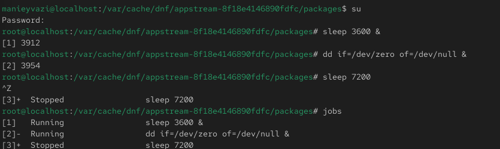
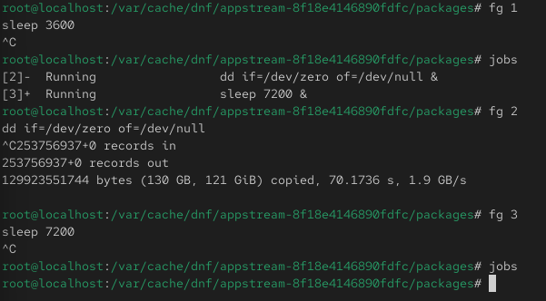
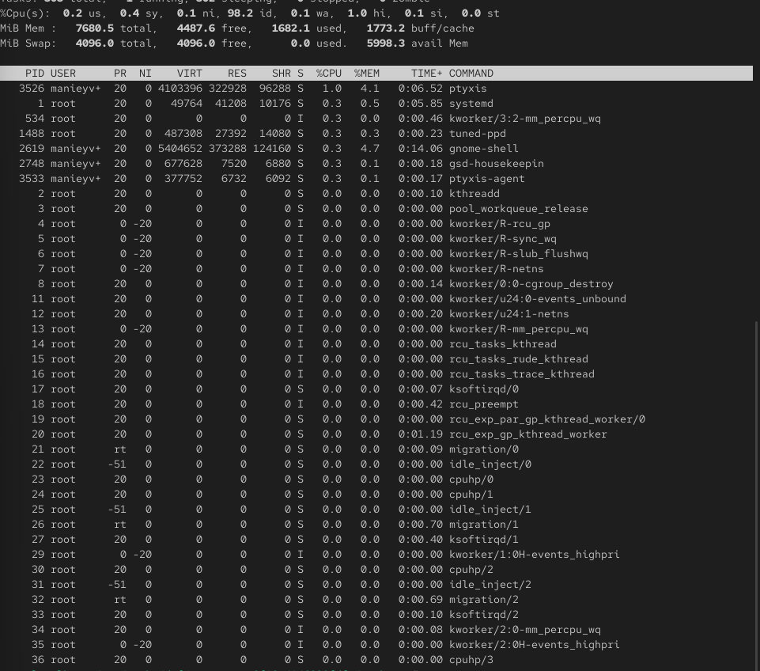
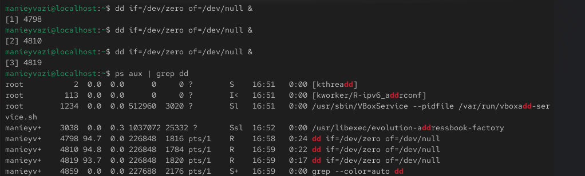
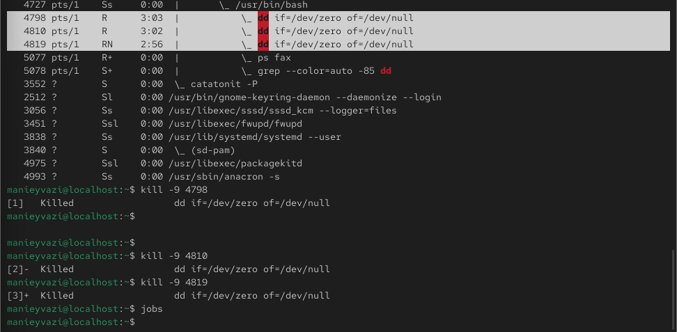

Получение навыков управления заданиями и процессами в Linux.

Рис. 1 — Запущенные задания и остановка процесса

Рис. 2 — Запуск задания в фоновом режиме и проверка статуса

Рис. 3 — Завершение фоновых процессов
-.
Рис. 4 — Процесс dd в top
-.

Рис. 5 — Запуск процессов dd
-.

Рис. 6 — Список процессов dd
-.

Рис. 7 — Иерархия процессов dd
-.

Рис. 8 — Изменение приоритета и завершение процессов dd
Проверка работы системы.

Рис. 9 — Запуск yes в фоне

Рис. 10 — Остановка и перевод yes в фоновый режим
В ходе работы были изучены основные приёмы управления заданиями и процессами в Linux. Были рассмотрены способы запуска и остановки программ, управление приоритетами, завершение процессов. Использовались команды jobs, fg, bg, kill, killall, nohup, а также утилиты ps и top.